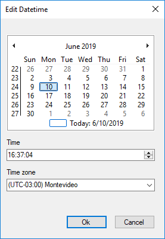
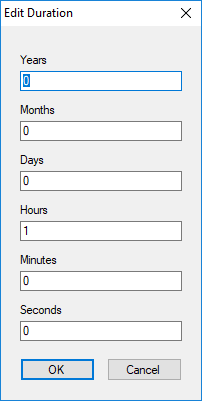
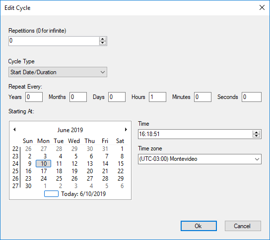

The Timer Intermediate Event adds time-based dependencies within a process and is either inserted into the sequence flow to create a delay or attached to an activity to create a deadline or "time-out" condition. SymbolDescriptionWhen a token (process instance) arrives at this Event, the clock starts and the token waits for the specified time-related condition to occur. PropertiesTimer UsageAvailable for intermediate timer events that are attached to Activities. This property allows you to catalog the timer for statistical and monitoring purposes. Possible values:
Interrupts ActivityAvailable for intermediate timer events that are attached to Activities (invisible when Timer Usage property is set to 'Warning'). More information at Interrupts Activity Property Timer DefinitionPossible values:
Timer Expression TypePossible values:
Timer DateVisible if Timer Definition property is set to 'Date' and Timer expression type property is set to 'Rule' Allows setting a fixed date and time to follow up with the process instance.  Timer DurationVisible if Timer Definition property is set to 'Duration' and Timer expression type property is set to 'Rule' Allows setting an expected duration of the activity. When the limit is reached, the event is triggered.  Timer CycleVisible if Timer Definition property is set to 'Cycle' and Timer expression type property is set to 'Rule'. Allows setting a date and time and information related to the event's repetitions and its cadence. Useful to periodically send notifications if the Activity takes too long.  Date Expression ProcedureVisible if Timer Expression Type is set to 'Procedure'. Allows setting a procedure that returns a date and time (DateTime data type) with the next time the event has to be triggered. If Timer definition property is set to 'Date' or 'Duration', then this procedure is called just once; if Timer Definition property is set to Cycle, then the procedure is called again after a timer is triggered. If it returns an already past date and time, then the timer event will not be triggered anymore in that process instance (unless the control flow returns to the timer). The procedure associated must have the following parm rule: parm( in:&WorkflowProcessDefinition, in:&WorkflowProcessInstance, in:&WorkflowWorkitem, out:&DateTime) Where: &WorkflowProcessDefinition is a WorkflowProcessDefinition data type variable &WorkflowProcessInstance is a WorkflowProcessInstance data type variable &WorkflowWorkitem is a WorkflowWorkitem data type variable &DateTime DateTime variable. Note: In order to see the Timer Events reflected in your inbox, you must run a program that checks and executes these events. See Timer Control for more information. See Also Timer Start Event in BPD |